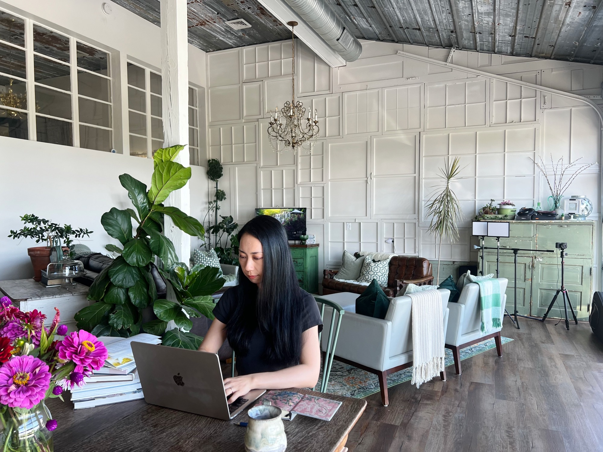

Data-based design, with Japanese precision.
I'm Shio — a bilingual web designer based in Massachusetts/Rhode Island. I build websites, SEO and detail-obsessed graphics for small and medium businesses in the U.S. and Japan, and I can explain every design decision with data, not hunches.

Shio · USA · JapanRead the data.
Design for people.
I believe beauty has a reason. Data-driven design means that before I open a design tool, I read the numbers — analytics, user behavior, market data — and only then do I make it beautiful. I take the analysis and the aesthetics equally seriously, because a site that only looks good is only half finished.
 Samurai Cook · on Google 2 hrs after launch
Samurai Cook · on Google 2 hrs after launchResearch before pixels
Statistics, behavioral psychology, search-intent data and industry benchmarks come first. I don't propose a layout I can't justify.
Built to be found
SEO is designed in from the first wireframe — structure, speed, headings, internal links — in partnership with a former U.S. SEO vice president whose clients have included Adobe, The New York Times, GEICO and Staples.
Two markets, one eye
I've lived in Japan and the U.S. long enough to know what each audience trusts. Japanese attention to detail, American clarity — your site gets both.
Numbers after launch
Launch is the starting line. Search Console, GA4 and Clarity tell us what visitors really do, and improvements are decided on data, not opinion.
Four ways I help businesses grow online.
Web Design & Build
From a simple business-card site to a fully custom website — on WordPress or Wix. Mobile-first, fast, and set up so you can manage it yourself after launch. I design differently for American and Japanese audiences, and when a project calls for fine, detailed visuals, I create them in Photoshop and build them in.
SEO
Keyword and search-intent research, site structure, on-page and technical SEO — built into the design from the first wireframe, not bolted on after. Every site launches with Search Console and GA4 set up, so results are measured rather than guessed.
Banners & Graphics
Japanese-level detail for banners, flyers, menus, thumbnails and social graphics — dense and informative, or clean and minimal. I've designed 100+ e-books and book covers, some of which reached Amazon category rankings, and my work has been selected in multiple Japanese design competitions, including a #1 weekly ranking on CrowdWorks, a major Japanese freelance platform.
Japanese ⇄ English
I've lived in four countries and still work as an active designer in the Japanese market, so I know the current trends on both sides of the Pacific. For U.S. businesses reaching Japanese customers, or Japanese companies entering the U.S., I design and localize — not just translate — so the site reads naturally to the audience it's for.
Designed to perform. Measured after launch.

A Michelin-starred Italian chef's new restaurant in Chicago. A custom design built to let the photography do the talking.

English website for an Osaka cooking class, built for international visitors. Designed with U.S. SEO from day one — on Google two hours after launch.

Website for a Massachusetts farm growing Japanese vegetables. What's in season, plus produce new to most Americans — all explained.

Website redesign for an irrigation company with 30+ years in business. Its strengths made clear at a glance — conversion rate up +400%.

A travel and review blog with in-depth articles on places, food and stays. Its reviews have earned thank-you gift cards from cafés and restaurants.
View all work
What you get that a template can't give you.
Every choice explained
You'll never hear “it just looks better.” I show the data, research or principle behind each decision — so revisions make the site stronger, not fuzzier.
Japanese attention to detail
Trained in Japan's design market, where clients expect precision down to the pixel and layouts that carry a lot of information without feeling crowded.
One designer, start to finish
Strategy, design, build and SEO by the same person. No hand-offs, no agency layers — direct communication and work you can trust.
Measured after launch
Analytics and Search Console are set up on day one. Launch is when we start learning what works — and improving it.
Ready for a website
that works as hard as you do?
Tell me about your business and your goals. I'll come back with an honest take on what would move the numbers — and what wouldn't.